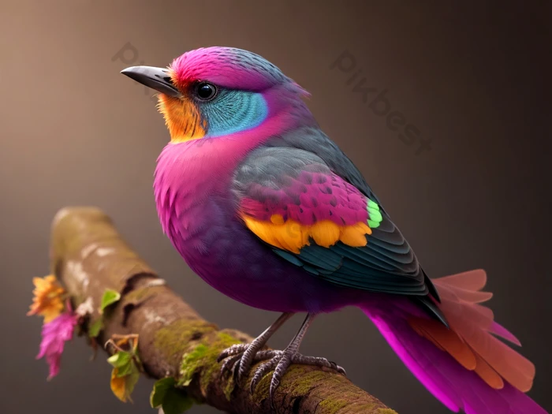
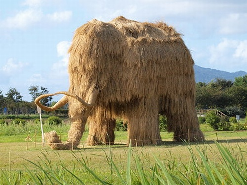
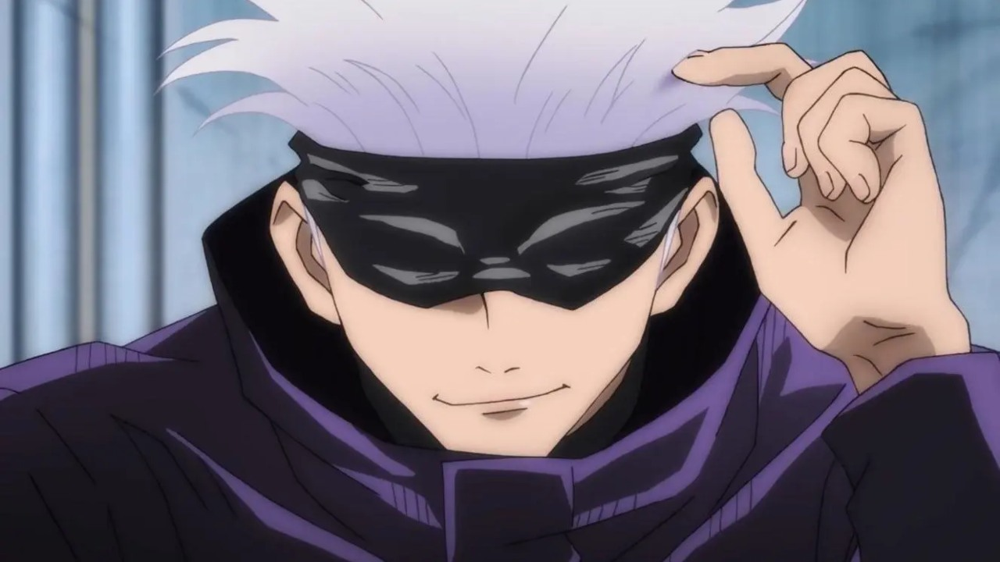

Artículo 1
La misteriosa ave del bosque tropical
En las profundidades del bosque tropical, un ave de colores vibrantes sorprende a los observadores. Con plumas en tonos de rosa, azul y naranja, este ejemplar único parece salido de un cuento fantástico. La biodiversidad sigue revelándonos sus secretos, recordándonos la belleza y complejidad de la naturaleza.
Artículo 2
¿Acaso este mamut será real?
En un festival de arte en el campo, un enorme mamut hecho completamente de paja ha capturado la atención de visitantes y locales. Esta obra monumental, creada por artistas locales, busca rendir homenaje a la majestuosidad de estas criaturas prehistóricas. La escultura no solo impresiona por su tamaño, sino también por el ingenio y creatividad que representa, convirtiéndose en un símbolo de conservación y respeto hacia la naturaleza.
Artículo 3
El mejor personaje, Satoru Gojo
Satoru Gojo, uno de los personajes más poderosos y queridos del anime Jujutsu Kaisen, sigue impresionando a los fans con su carisma y habilidades incomparables. Reconocido por su cabello blanco y su característico antifaz, Gojo es un hechicero de clase especial que domina técnicas impresionantes y mantiene una actitud despreocupada. Su popularidad ha crecido exponencialmente, convirtiéndolo en un ícono del anime moderno.
